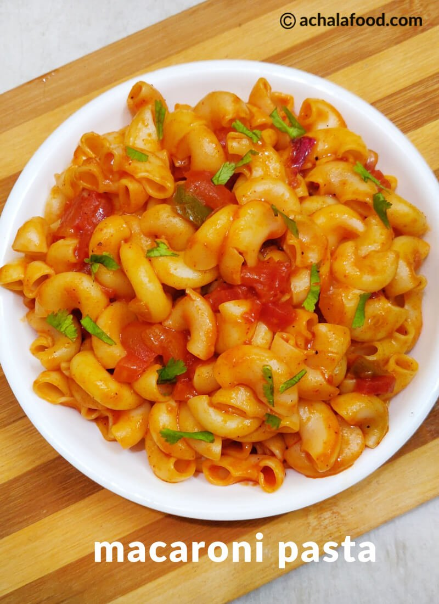

Our services
Here is our Food services which we provide to our coustomers
Rasgulla is milk based sweet made by curding milk, draning the whey and kneading the whey solid
to make balls. These Balls are cooked in hot sugar syrup untill light and spongy.
Rasgulla originated in Bengal, however now is sold and enjoyed all over the country.
People think that it might be too difficult to make it, however it is actually not.
You can easily prepare this mouthwatering sweet at home and enjoy it after meals,
I just love to open the fridge door and grab one for myself

Macaroni pasta an Indian version of dry pasta recipe which is typically prepared with narrow elbow-shaped macaroni pasta. This macaroni recipe is a tasty pasta made Indian style with onions
, tomatoes, and Indian spices.You can use any kind of pasta,
though macaroni, spaghetti & penne go well in this pasta recipe.
I have used elbow shaped pasta for this recipe. You can also use any cylindrical cone shaped, spiral or any other desired shape pasta for this simple macaroni pasta recipe.
Biryani is synonymous with Hyderabad. It is an iconic dish, loved not just in Hyderabad but a favourite all over the world.
The mere mention of Hyderabad and your mouth starts watering for biryani. I am a Hyderabadi and Biryani runs in our blood! It’s my favourite, favourite and the most favourite dish, like it must be for most people who belong to this city. It is usually on the menu in our home for the Sunday family lunch.